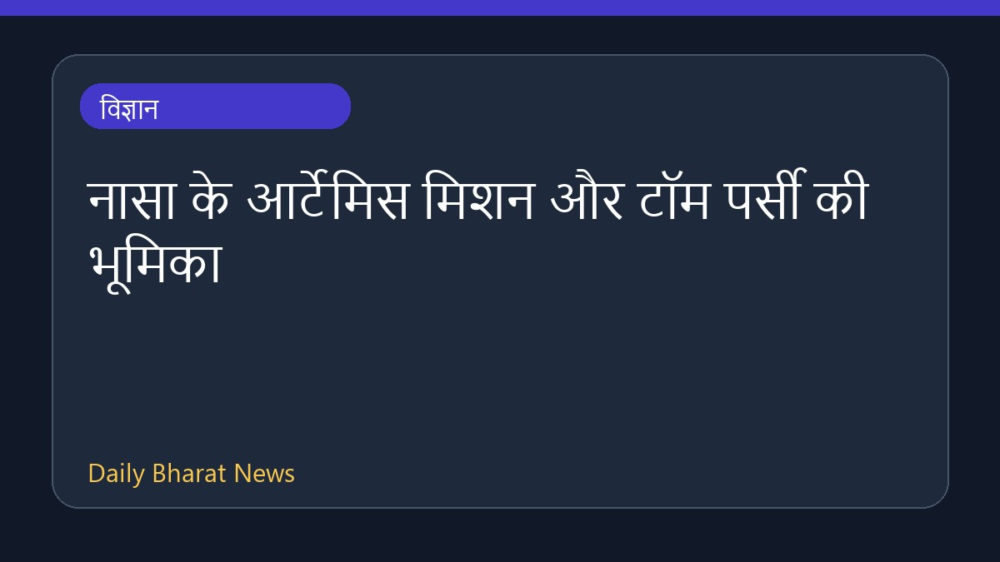

नासा के आर्टेमिस मिशन और टॉम पर्सी की भूमिका

चन्द्रमा और मंगल ग्रह पर दीर्घकालिक अन्वेषण के लिए नासा अपने आर्टेमिस अभियानों की गति को बढ़ा रहा है। इस योजना को साकार करने में टॉम पर्सी मदद कर रहे हैं, जो नासा के मानव लैंडिंग सिस्टम प्रोग्राम के लिए सिस्टम इंजीनियरिंग और एकीकरण के प्रबंधक हैं। पर्सी स्पेसएक्स जैसे सेवा प्रदाताओं के साथ काम करने में एक प्रमुख केंद्र बिंदु के रूप में कार्य करते हैं, जिससे अंतरिक्ष अन्वेषण की दिशा में एजेंसी के इन आगामी महत्वाकांक्षी अभियानों को आगे बढ़ाया जा रहा है।
मूल स्रोत: NASA
I Am Artemis Tom Percy ↗
I Am Artemis Tom Percy ↗